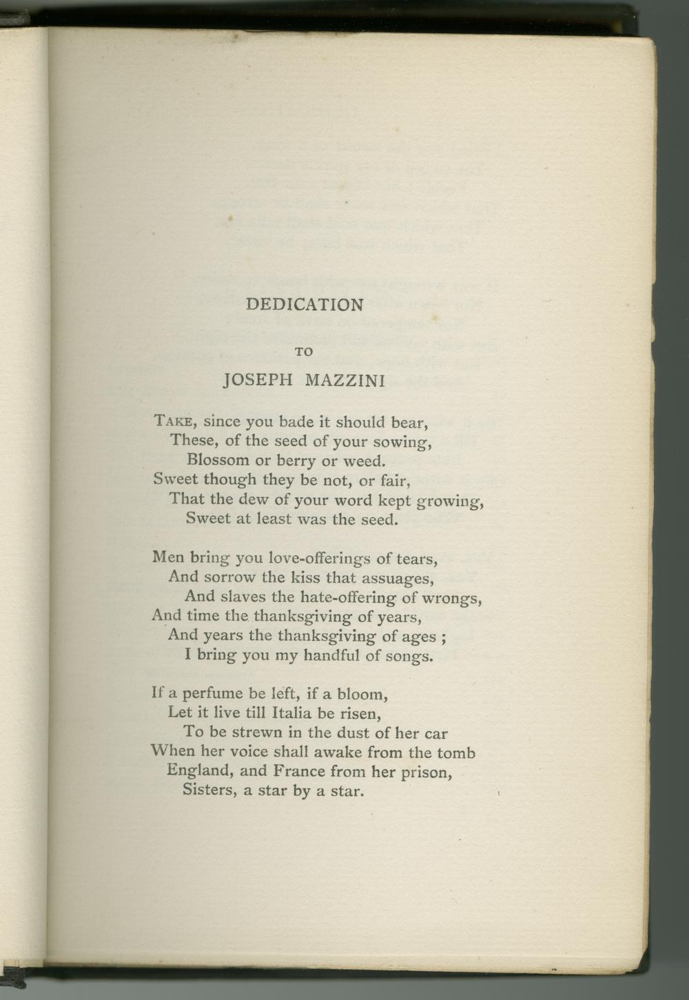
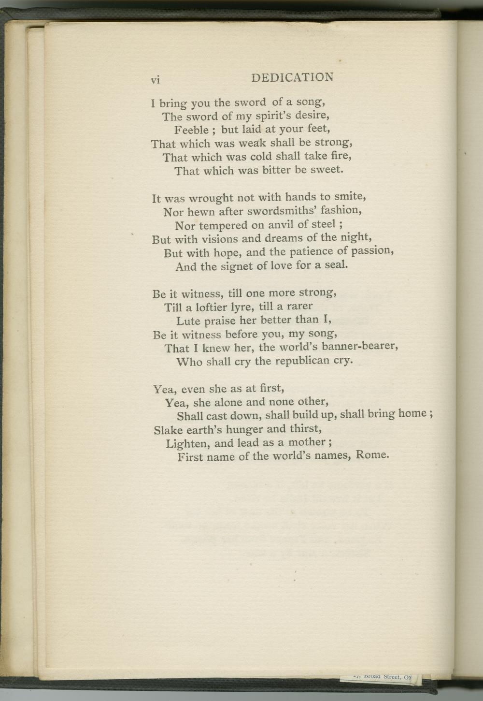

page: [v] 
Dedication
to
Joseph
Mazzini
Take, since you bade it should bear,
These, of the seed of your sowing,
Blossom or berry or weed.
Sweet though they be not, or fair,
That the dew of your word kept growing,
Sweet at least was the seed.
Men bring you love-offerings of tears,
And sorrow the kiss that assuages,
And slaves the hate-offering of wrongs,
And time the thanksgiving of years,
And years the thanksgiving of ages;
I bring you my handful of songs.
If a perfume be left, if a bloom,
Let it live till
Italia
be risen,
To be strewn in the dust of her car
When her voice shall awake from the tomb
England, and France from her prison,
Sisters, a star by a star.
page: vi 
I bring you the sword of a song,
The sword of my spirit's desire,
Feeble; but laid at your feet,
That which was weak shall be strong,
That which was cold shall take fire,
That which was bitter be sweet.
It was wrought not with hands to smite,
Nor hewn after swordsmiths' fashion,
Nor tempered on anvil of steel;
But with visions and dreams of the night,
But with hope, and the patience of passion,
And the signet of love for a seal.
Be it witness, till one more strong,
Till a loftier lyre, till a rarer
Lute praise her better than I,
Be it witness before you, my song,
That I knew her, the world's banner-bearer,
Who shall cry the republican cry.
Yea, even she as at first,
Yea, she alone and none other,
Shall cast down, shall build up, shall bring home;
Slake earth's hunger and thirst,
Lighten, and lead as a mother;
First name of the world's names, Rome.